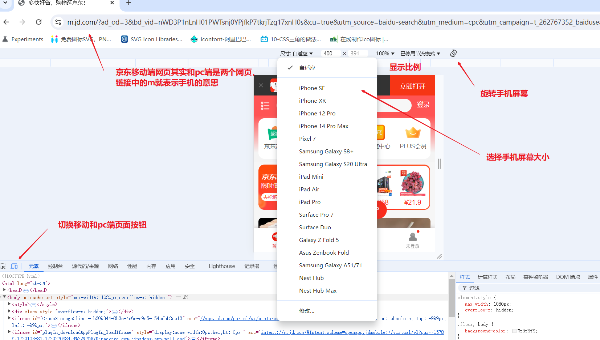

CSS移动端
一、移动端基础
浏览器主要分为PC端浏览器和移动端浏览器。移动端浏览器有很多，类似qq浏览器、欧朋浏览器等，它们比PC端浏览器要晚出现，因此其版本和兼容性更强。大部分国产浏览器都是根据Webkit内核修改过来的，因此兼容大部分移动端浏览器，只需要处理==Webkit内核浏览器==即可。Webkit内核基本支持H5与CSS3,因此可以大量使用css3样式。
移动端设备屏幕尺寸非常多，以iPhone为例这些年其手机与各种平板设备屏幕的分辨率就有640×960、640×1136、750×1334、1242×2208。Android的更多。但作为移动页面的开发者，无需关注这些分辨率，因为我们使用的单位是px。再结合后面的布局技术，可以很容易实现自动适配屏幕。作为开发者不建议去纠结dp、dpi、pt、ppi等单位，只需要使用px后续换算为对应单位即可。
移动端的调试，以chrome浏览器，京东的手机页面为例。依然还是进入浏览器按f12进入调试。大部分调试查看网页内容的方式跟之前pc端是一致的。在移动端上边多了一些按钮，可调节屏幕大小以及旋转屏幕。

二、视口 viewport
视口(viewport)就是浏览器显示页面内容的屏幕区域。视口分为布局视口、视觉视口和==理想视口==。
布局视口(layout viewport):一般移动设备的浏览器默认设置了一个布局视口，用于解决早期PC端页面在手机上显示的问题。Android、IOS基本都将这个视口分辨率设置为980px,所有PC网页大多数都能在手机上呈现，只不过==元素会缩小==,虽然可以手动缩放网页放大元素，但对用户十分不友好。
视觉视口(visual viewport):它是用户能看到的网站区域，用户可以通过缩放去操作视觉视口，但不会影响布局视口，布局视口仍保持原有的宽度。类似于PC上操作浏览器边框调节页面显示大小的操作。==网页看不全时通过左右滑动看完内容==。
理想视口(ideal viewport):理想视口对设备来说是最理想的视口尺寸，可以根据设备调整页面内容让浏览阅读最舒适，需要手动添加meta视口标签通知浏览器操作，其主要目的是让布局视口的宽度与理想视口宽度一致，也就是==布局视口和设备宽度==一样。（乔布斯发明的）
2.☆ meta视口标签
x<html lang="en"><head> <meta charset="UTF-8"> <!-- 定义视口 名称为viewport 标准视口写法 --> <meta name="viewport" content="width=device-width, user-scalable=no,initial-scale=1.0,maximum-scale=1.0,minimum-scale=1.0"> <title>Document</title></head>
<body></body></html>| 属性 | 解释说明 |
|---|---|
| width | 宽度设置，也就是布局视口的宽度，设置device-width就是跟设备宽度一致，动态调节宽度 |
| initial-scale | 初始缩放比，大于0的数字，意思是第一次打开页面时缩放比例，默认是1也就是不缩放 |
| maximum-scale | 最大缩放比，大于0的数字，限制缩放比例最大值 |
| minimum-scale | 最小缩放比，大于0的数字，限制缩放比例最小值 |
| user-scalable | 用户是否可以缩放，yes或者no（1或者0）,默认值是yes |
三、二倍图
在在学习2倍图前，还需要先了解两个概念：物理像素点与物理像素比。
不管在手机还是电脑，都经常听到分辨率这词，例如一张图为分辨率1080×960，它的含义是：横向宽度上1080个像素，纵向高度上有960个像素。但这个像素是屏幕像素。
物理像素是指屏幕显示的最小颗粒(以前老电脑一个像素就是一个显像管)，是物理真实存在的。而它的大小一般厂商在出厂时就已经设置好了的。比如iPhone6\7\8的物理像素是750×1334px；
在电脑端，一般屏幕像素是等于物理像素的，也就是1px就是1个物理像素点。但移动端确不一样。例如一个300×300px盒子，在pc网页显示就是300×300px，但如果切换到iphone8,会出现放大2倍的情况。

这种情况的出现，就是因为iphone8的物理像素与屏幕像素不是1:1的比例，而是2:1,也就是2个物理像素等于一个屏幕像素。这也就是我们常说的物理像素比(dpr)。
浏览器上显示的375×667px也就是iphone8的屏幕像素。下表就列出的以前手机的屏幕尺寸与物理像素比。

==为什么会出现物理像素跟屏幕像素不一致的情况？==
因为本身手机屏幕很小，如果我们想要显示图片更清晰，就需要把更多的像素放入小屏幕中，这时厂商就采用了一种名叫Retina(视网膜屏幕)的显示技术，可以把多个物理像素点压缩到一块屏幕里。借此就出现物理像素比变大的情况。

物理像素比不为1，在网页中显示的内容就会出现放大效果，对于网页文字来说放大并不会出现失真的情况，但图片一旦放大就会出现失真模糊。为了防止出现失真情况，这时就需要使用二倍图或者多倍图来解决该情况。
二倍图的策略就是将原本需要的图片先缩小显示为1/2，然后到手机端被放大时只是恢复本身大小，因此不会失真。例如：需要一个50×50px的图片，我们就准备一个100×100px的图片，在开发中先缩小显示图片，等到了手机端会被放大2倍还原不会失真。
==img的2倍图==的写法：
xxxxxxxxxx<html lang="en"><head> <meta charset="UTF-8"> <!-- 定义视口 名称为viewport 标准视口写法 --> <meta name="viewport" content="width=device-width, user-scalable=no,initial-scale=1.0,maximum-scale=1.0,minimum-scale=1.0"> <title>Document</title> <style> /* 大图片缩小为50*50显示 */ img:nth-child(2) { width: 50px; height: 50px; } </style></head><body> <!-- 50*50的图片 --> <img src="images/apple50.jpg" alt=""> <!-- 100*100的图片 --> <img src="images/apple100.jpg" alt=""></body></html>手机端的效果

多倍图写法与2倍图基本一致，就看你实际需要的图片倍数。如果用高倍图图片太大，会让网页加载很慢。
实际开发中，常常会准备多个图片，进入网页快速加载就先加载低倍图，等网页加载完毕，再加载高倍图替换低倍图。这就是现在常见的网页刚进入很模糊一会后图片就变清晰的原理。
==background背景图的2倍图==的写法为
xxxxxxxxxx<html lang="en"><head> <meta charset="UTF-8"> <meta name="viewport" content="width=device-width, user-scalable=no,initial-scale=1.0,maximum-scale=1.0,minimum-scale=1.0"> <title>Document</title> <style> div { width: 50px; height: 50px; border: 1px solid red; background: url(images/apple100.jpg) no-repeat; /* 核心就是这里背景图的缩放为50*50px */ background-size: 50px 50px; } </style></head><body> <div></div></body></html>==精灵图的2倍图==，它缩放的是整体的精灵图，因此不仅需要缩放精灵图本身大小，还需要将精灵的位置距离也等比缩放。例如：原本精灵图中图的位置是500*500px,它其中一个精灵的位置为-50px，-100px,则它的2倍精灵图写法如下
xxxxxxxxxx<html lang="en"><head> <meta charset="UTF-8"> <meta name="viewport" content="width=device-width, user-scalable=no,initial-scale=1.0,maximum-scale=1.0,minimum-scale=1.0"> <title>Document</title> <style> div { width: 50px; height: 50px; border: 1px solid red; /* 精灵的位置距离也缩放为-25px -50px */ background: url(images/sprites.png) no-repeat -25px -50px; /* 这里是整体精灵图的缩放为250*250px */ background-size: 250px 250px; } </style></head><body> <div></div></body></html>快速制作2倍图或者其他多倍图，ps中的插件cutterman就可以很容易的实现该效果。选择ios端，这样可以直接看到效果。Android端导出的方式不一样。

四、移动端开发
移动端开发有两种主流方案：
单独制作移动端页面(主流)，京东、淘宝、苏宁易购手机版
响应式页面兼容pc端与移动端,[三星手机官网]:https://www.samsung.com.cn/，它的核心原理是根据屏幕宽度来改变样式，以适应不同终端。网页制作麻烦，维护成本高而且兼容性很容易出现问题。
移动端css样式初始化 推荐使用文档normalize.css,该文档的优点有保护了有价值的默认值、修复了浏览器bug、是模块化的、拥有详细的文档介绍，[官网地址]：https://github.com/necolas/normalize.css/,其8.0.1版本如下
xxxxxxxxxx/*! normalize.css v8.0.1 | MIT License | github.com/necolas/normalize.css */
/* Document ========================================================================== */
/** * 1. Correct the line height in all browsers. * 2. Prevent adjustments of font size after orientation changes in iOS. */
html { line-height: 1.15; /* 1 */ text-size-adjust: 100%; /* 2 */}
/* Sections ========================================================================== */
/** * Remove the margin in all browsers. *//*这里使用body而不是*号，清除样式更快，只清除了margin是因为body没有内边距border，有什么清除什么是最优秀的写法*/body { margin: 0;}
/** * Render the `main` element consistently in IE. */
main { display: block;}
/** * Correct the font size and margin on `h1` elements within `section` and * `article` contexts in Chrome, Firefox, and Safari. */
h1 { font-size: 2em; margin: 0.67em 0;}
/* Grouping content ========================================================================== */
/** * 1. Add the correct box sizing in Firefox. * 2. Show the overflow in Edge and IE. */
hr { box-sizing: content-box; /* 1 */ height: 0; /* 1 */ overflow: visible; /* 2 */}
/** * 1. Correct the inheritance and scaling of font size in all browsers. * 2. Correct the odd `em` font sizing in all browsers. */
pre { font-family: monospace, monospace; /* 1 */ font-size: 1em; /* 2 */}
/* Text-level semantics ========================================================================== */
/** * Remove the gray background on active links in IE 10. */
a { background-color: transparent;}
/** * 1. Remove the bottom border in Chrome 57- * 2. Add the correct text decoration in Chrome, Edge, IE, Opera, and Safari. */
abbr[title] { border-bottom: none; /* 1 */ text-decoration: underline; /* 2 */ text-decoration: underline dotted; /* 2 */}
/** * Add the correct font weight in Chrome, Edge, and Safari. */
b,strong { font-weight: bolder;}
/** * 1. Correct the inheritance and scaling of font size in all browsers. * 2. Correct the odd `em` font sizing in all browsers. */
code,kbd,samp { font-family: monospace, monospace; /* 1 */ font-size: 1em; /* 2 */}
/** * Add the correct font size in all browsers. */
small { font-size: 80%;}
/** * Prevent `sub` and `sup` elements from affecting the line height in * all browsers. */
sub,sup { font-size: 75%; line-height: 0; position: relative; vertical-align: baseline;}
sub { bottom: -0.25em;}
sup { top: -0.5em;}
/* Embedded content ========================================================================== */
/** * Remove the border on images inside links in IE 10. */
img { border-style: none;}
/* Forms ========================================================================== */
/** * 1. Change the font styles in all browsers. * 2. Remove the margin in Firefox and Safari. */
button,input,optgroup,select,textarea { font-family: inherit; /* 1 */ font-size: 100%; /* 1 */ line-height: 1.15; /* 1 */ margin: 0; /* 2 */}
/** * Show the overflow in IE. * 1. Show the overflow in Edge. */
button,input { /* 1 */ overflow: visible;}
/** * Remove the inheritance of text transform in Edge, Firefox, and IE. * 1. Remove the inheritance of text transform in Firefox. */
button,select { /* 1 */ text-transform: none;}
/** * Correct the inability to style clickable types in iOS and Safari. */
button,[type="button"],[type="reset"],[type="submit"] { appearance: button;}
/** * Remove the inner border and padding in Firefox. */
button::focus-inner,[type="button"]::focus-inner,[type="reset"]::focus-inner,[type="submit"]::focus-inner { border-style: none; padding: 0;}
/** * Restore the focus styles unset by the previous rule. */
button:focusring,[type="button"]:focusring,[type="reset"]:focusring,[type="submit"]:focusring { outline: 1px dotted ButtonText;}
/** * Correct the padding in Firefox. */
fieldset { padding: 0.35em 0.75em 0.625em;}
/** * 1. Correct the text wrapping in Edge and IE. * 2. Correct the color inheritance from `fieldset` elements in IE. * 3. Remove the padding so developers are not caught out when they zero out * `fieldset` elements in all browsers. */
legend { box-sizing: border-box; /* 1 */ color: inherit; /* 2 */ display: table; /* 1 */ max-width: 100%; /* 1 */ padding: 0; /* 3 */ white-space: normal; /* 1 */}
/** * Add the correct vertical alignment in Chrome, Firefox, and Opera. */
progress { vertical-align: baseline;}
/** * Remove the default vertical scrollbar in IE 10+. */
textarea { overflow: auto;}
/** * 1. Add the correct box sizing in IE 10. * 2. Remove the padding in IE 10. */
[type="checkbox"],[type="radio"] { box-sizing: border-box; /* 1 */ padding: 0; /* 2 */}
/** * Correct the cursor style of increment and decrement buttons in Chrome. */
[type="number"]::inner-spin-button,[type="number"]::outer-spin-button { height: auto;}
/** * 1. Correct the odd appearance in Chrome and Safari. * 2. Correct the outline style in Safari. */
[type="search"] { appearance: textfield; /* 1 */ outline-offset: -2px; /* 2 */}
/** * Remove the inner padding in Chrome and Safari on macOS. */
[type="search"]::search-decoration { appearance: none;}
/** * 1. Correct the inability to style clickable types in iOS and Safari. * 2. Change font properties to `inherit` in Safari. */
::file-upload-button { appearance: button; /* 1 */ font: inherit; /* 2 */}
/* Interactive ========================================================================== */
/* * Add the correct display in Edge, IE 10+, and Firefox. */
details { display: block;}
/* * Add the correct display in all browsers. */
summary { display: list-item;}
/* Misc ========================================================================== */
/** * Add the correct display in IE 10+. */
template { display: none;}
/** * Add the correct display in IE 10. */
[hidden] { display: none;}移动端盒子模型使用CSS3的盒子模型，也就是box-sizing:border-box,因为这样就不需要考虑内边距与外边框对盒子宽度的影响。
移动端特殊样式，用于清除默认的移动端样式方便后续我们自定义样式。
xxxxxxxxxx<html lang="en"><head> <meta charset="UTF-8"> <meta name="viewport" content="width=device-width, user-scalable=no,initial-scale=1.0,maximum-scale=1.0,minimum-scale=1.0"> <title>Document</title> <style> body { /* CSS3盒子模型 */ box-sizing: border-box; box-sizing: border-box; }
a { /* 点击a链接出现的高亮样式，清除高亮样式 设置透明色即可 该样式已经过时 因为是一个非标准的CSS属性。*/ tap-highlight-color: transparent; }
input { /* 移动端默认按钮样式清除，ios上必须要加上这个属性才能给按钮输入框自定义样式 */ appearance: none; }
img, a { /* 禁用长按页面时弹出的菜单 */ touch-callout: none; } </style></head>
<body> <a href="#">黑马</a> <input type="button" name="" id="" value="按钮"> <img src="dog.jpg" alt=""></body></html>五、移动端页面布局
移动端页面布局与PC端的布局是有区别的，根据移动端的开发方案分为两大类：
单独制作移动端页面的布局有：
流样式布局(百分比布局)
flex弹性布局(常用)
less+rem+媒体查询布局
混合布局，也就是多种布局同时使用
响应式页面的布局有：
媒体查询
bootstarp布局
5.1 流式布局(百分比布局)
所谓流式布局也称为非固定像素布局。其本质就是==盒子的宽度不在使用具体像素而是百分比==，让盒子宽度根据屏幕宽度来动态收缩，不受固定像素限制，内容向两侧填充。高度不用限制，因为纵向上屏幕高度理论上是无限的。
有时也需要限制，如果让宽度无限拉伸或者缩小会导致布局混乱，比如第一行的显示到第二行了，因此常常会添加宽度限制
max-width:最大宽度
min-width:最小宽度
max-height:最大高度(扩展)
min-height:最大高度
xxxxxxxxxx<html lang="en"><head> <meta charset="UTF-8"> <meta name="viewport" content="width=device-width, initial-scale=1.0"> <title>Document</title> <style> * { margin: 0; padding: 0; }
section { width: 100%; /* 宽度最大980px */ max-width: 980px; min-width: 320px; margin: 0 auto; }
section div { float: left; width: 50%; height: 400px; }
section div:nth-child(1) { background-color: hotpink; }
section div:nth-child(2) { background-color: purple; } </style></head><body> <section> <div></div> <div></div> </section></body></html>效果

5.2 京东移动端模仿案例
案例中使用2种新的图片格式
html文件内容
xxxxxxxxxx<html lang="en"><head> <meta charset="UTF-8"> <!-- 视口设置 --> <meta name="viewport" content="width=device-width, initial-scale=1.0,user-scalable=no,minimum-scale=1.0,maximum-scale=1.0"> <title>Document</title> <!-- 引入初始化样式 --> <link rel="stylesheet" href="css/normalize.css"> <!-- 引入个人的样式 --> <link rel="stylesheet" href="css/index.css"></head>
<body> <!-- 1.头部区域--> <header class="app"> <ul> <li> <img src="images/close.png" alt=""> </li> <li> <img src="images/logo.png" alt=""> </li> <li>打开京东app，购物更轻松</li> <li>立即打开</li> </ul> </header> <!-- 2. 搜索区域 --> <div class="search-wrap"> <div class="search-btn"></div> <div class="search"> <div class="jd-icon"></div> <!-- 精灵2倍图 --> <div class="sou"></div> <input type="search" placeholder="好奇×蔡康永新书《博学》免费送dadasdsadaf"> </div> <div class="search-login">登录</div> </div>
<!-- 3.主体内容 --> <div class="main-content"> <!-- 滑动图 --> <div class="slider"> <!-- dpg格式图片是京东做的一种压缩图片的格式，就是为了不损失图片内容变小图片 --> <img src="upload/banner.dpg" alt=""> </div> <!-- 特殊组合图片 由多张图片组合为一张图片展示--> <div class="brand"> <div> <a href="#"><img src="upload/pic11.dpg" alt=""></a> </div> <div> <a href="#"><img src="upload/pic22.dpg" alt=""></a> </div> <div> <a href="#"><img src="upload/pic33.dpg" alt=""></a> </div> </div> <!-- 导航栏 移动端不需要太复杂 因此没用ul li包含--> <nav> <a href="#"> <img src="upload/nav1.webp" alt=""> <span>京东超市</span> </a> <a href="#"> <img src="upload/nav2.webp" alt=""> <span>京东超市</span> </a> <a href="#"> <img src="upload/nav3.webp" alt=""> <span>京东超市</span> </a> <a href="#"> <img src="upload/nav1.webp" alt=""> <span>京东超市</span> </a> <a href="#"> <img src="upload/nav2.webp" alt=""> <span>京东超市</span> </a> <a href="#"> <img src="upload/nav3.webp" alt=""> <span>京东超市</span> </a> <a href="#"> <img src="upload/nav1.webp" alt=""> <span>京东超市</span> </a> <a href="#"> <img src="upload/nav2.webp" alt=""> <span>京东超市</span> </a> <a href="#"> <img src="upload/nav3.webp" alt=""> <span>京东超市</span> </a> <a href="#"> <img src="upload/nav2.webp" alt=""> <span>京东超市</span> </a> </nav> <!-- 新闻快报 --> <div class="news"> <a href="#"> <img src="upload/new1.dpg" alt=""> </a> <a href="#"> <img src="upload/new2.dpg" alt=""> </a> <a href="#"> <img src="upload/new3.dpg" alt=""> </a> </div> </div></body></html>css文件内容
xxxxxxxxxx/* 1.公共统一的样式写在body，body里子盒子就直接继承该样式 */body { width: 100%; min-width: 320px; max-width: 1080px; margin: 0 auto; font-family: system, Helvetica, sans-serif; font-size: 14px; color: #666; /* 行高为字体14*1.5=21px */ line-height: 1.5; /* 测试用 */ /* background-color: #ccc; height: 3000px; */}
/* 特殊样式 */* { tap-highlight-color: transparent;}
input { appearance: none;}
img,a { touch-callout: none;}
/* 清除所有ul与li的样式 */ul { margin: 0; padding: 0; list-style: none;}
a { /* 整体修改a标签样式 */ color: #666; text-decoration: none;}
img { /* 去除图片底部空白缝隙 */ vertical-align: top;}
/* 1.头部header样式 */.app { height: 45px;}
.app ul li { float: left; height: 45px; background-color: #333333; text-align: center; line-height: 45px; color: #fff;}
.app ul li:nth-child(1) { width: 8%;}
.app ul li:nth-child(1) img { /* 只设置图片宽度，这样它的高度就会随宽度等比缩放 */ vertical-align: middle; width: 10px;}
.app ul li:nth-child(2) { width: 10%;}
.app ul li:nth-child(2) img { width: 30px; /* 行内块元素图片要与文字垂直居中对齐 */ vertical-align: middle;}
.app ul li:nth-child(3) { width: 57%;}
.app ul li:nth-child(4) { width: 25%; background-color: #f63115;}
/* 2. 搜索样式 */.search-wrap { /* 使用固定定位 固定定位盒子要给宽度 因此要设置最大最小宽度 */ position: fixed; overflow: hidden; width: 100%; height: 44px; min-width: 320px; max-width: 1080px;}
.search-btn { position: absolute; top: 0; left: 0; width: 40px; height: 44px;}
.search-btn::before { content: ""; display: block; width: 20px; height: 18px; background: url(../images/s-btn.png) no-repeat; /* 缩放图片 */ background-size: 20px 18px; margin: 14px 0 0 15px;}
.search-login { position: absolute; top: 0; right: 0; width: 40px; height: 44px; color: #fff; text-align: center; line-height: 44px;}
.search { position: relative; /* 不给宽度，让搜索栏随父盒子大小变化而变化 */ height: 30px; background-color: #fff; border-radius: 15px; /* 上边距有塌陷问题，使用overflow解决 */ margin: 7px 50px 0;}
.jd-icon { width: 20px; height: 15px; position: absolute; top: 8px; left: 13px; background: url(../images/jd.png) no-repeat; background-size: 20px 15px;}
/* 竖线制作 */.jd-icon::after { position: absolute; top: 0px; right: -8px; content: ""; display: block; width: 1px; height: 15px; background-color: #ccc;}
.sou { position: absolute; top: 8px; left: 50px; width: 18px; height: 15px; /* 精灵位置也变为原来的一半 */ background: url(../images/jd-sprites.png) no-repeat -81px 0px; /* 精灵图2倍缩放,只需要宽度变为原来的一半，这样高度就等比缩放 这里不能用50%,因为这表示背景图盒子的一半，这里盒子远比精灵图小 */ background-size: 200px auto;}
/* 搜索内容 */.search input { position: absolute; top: 5px; left: 77px; width: calc(100% - 90px); /* 清除外边框 */ border: 0; /* 清除表单轮廓 */ outline: none; font-size: 14px; white-space: nowrap; overflow: hidden; text-overflow: ellipsis;}
/* 3. 主体内容 */.slider img { width: 100%;}
.brand { /* 圆角隐藏图片多余的内容 */ overflow: hidden; border-radius: 10px 10px 0 0;}
.brand div { float: left; width: 33.33%;}
.brand div img { width: 100%;}
/* nav导航栏 */nav { /* 为了清除浮动，让下面的内容可以设置边距 */ overflow: hidden; padding-top: 5px;}
nav a { float: left; width: 20%; text-align: center;}
nav a img { width: 40px; margin: 10px 0;}
/* span行内元素转化为块级元素 */nav a span { display: block;}
/* 新闻快报 */.news { /* 需要清除浮动才有效 */ margin-top: 20px;}
.news a { float: left; box-sizing: border-box;}
.news a:nth-child(1) { width: 50%;}
.news a:nth-child(n+2) { width: 25%; border-left: 1px solid #ccc;}
.news img { width: 100%;}运行效果先模拟不同手机测试，最后真机测试效果，没问题就说明开发成功了

5.3 flex布局